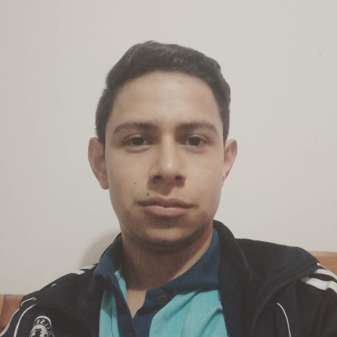

Jairo Andrés
Alzate Pinzón

DESARROLLADOR STAFF
Actualmente perteneciendo al Semillero fedesoft.
Con conocimientos en:
- Java
- Javascript
- Backend (Node)
- Frontend (html, css)
- Graphql
- Python
- Bases de datos(MongoDB, Oracle, PosgreSQL)
Estudios
Colegio Guillermo Leon Valencia Sede Integrado Duitama-Boyaca
Año inicio: 2004
Año Fin: 2015
Titulo obtenido: Bachiller tecnico con especiliadidad en tecnologia e informatica
Servicio Nacional de Aprendizaje (SENA)
Año inicio: 2014
Año Fin: 2015
Titulo obtenido: Tecnico en Sistema
Universidad Pedadogica y Tecnologica de Colombia Sede Tunja-Boyaca
Año inicio: 2016
Año Fin: 2021
Titulo obtenido: Ingeniero de Sistemas y Computación
Contacto